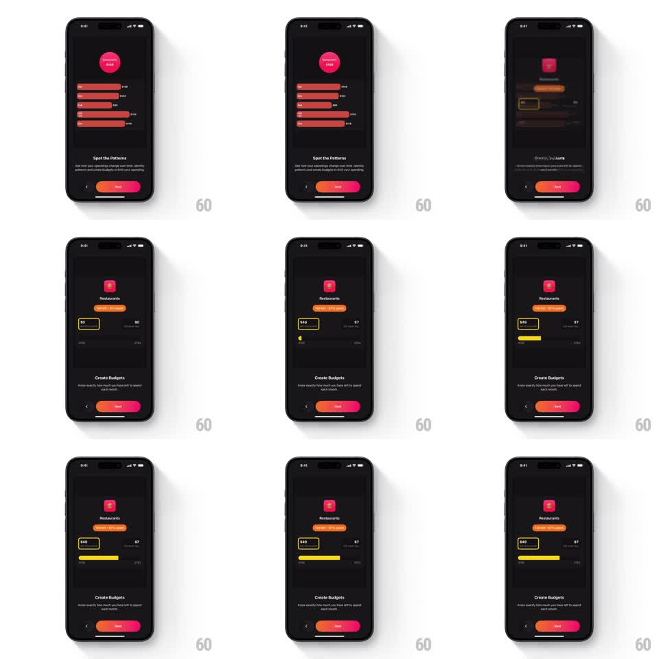

Media
Frame-by-frame

Rebuild this animation 1:1: Finma's Create Budgets onboarding - the "Spot the Patterns" chart blurs and zooms into the "Create Budgets" page, where a Restaurants budget card fills a yellow progress bar while its spent/left counters roll up ("$49" spent, "$7 left every day").

Rebuild this animation 1:1: Finma's Create Budgets onboarding - the "Spot the Patterns" chart blurs and zooms into the "Create Budgets" page, where a Restaurants budget card fills a yellow progress bar while its spent/left counters roll up ("$49" spent, "$7 left every day").
## Integration
Integration: stack-agnostic spec - springs given as stiffness/damping, timed motions as duration + curve; map every value to your framework and animation library of choice.
## Scene
Dark onboarding. Incoming page: "Create Budgets" title, "Know exactly how much you have left to spend each month" subcopy, pager, back chevron, gradient Next pill. The demo card: pink Restaurants logo, "$30 left - 57% spent" pill, a highlighted "$49" box (yellow outline), "$7 left every day" text, and a yellow progress bar that fills; budget scale markers at the ends. The outgoing "Spot the Patterns" page (pink bubble, red bars) blurs away behind it.
## Motion spec
Pattern: blur-zoom page handoff with filling progress and rolling counters.
- Transition: the outgoing chart scales up and blurs (scale 1.05, blur 20pt, 300ms) as the budget card sharpens from blur (300ms) - a focus pull between pages.
- The Restaurants logo pops (scale 0.8 -> 1, spring ~340/16); the "57% spent" pill slides in (translateX -10pt, 200ms).
- The progress bar fills left to right (width 0 -> 57%, 800ms, ease-out) in yellow; in sync, the "$49" counter rolls its digits up (600ms) and "$7 left every day" fades in after (200ms).
- The highlight box around "$49" draws its outline (stroke trim, 250ms) once the fill settles.
- The sequence loops the fill/counters subtly (pause 1.5s, reset 200ms) while the page rests.
## Calibration
- Yellow marks spent progress and the spent figure; the "left" pill is orange-red - two distinct semantics.
- The bar's fill and the counter finish together.
## Reduced motion
The pages crossfade (250ms); the bar and counters appear at final values.
## Don't miss
- The "$7 left every day" line is the takeaway - it arrives last, after the numbers.
- The Next pill keeps its orange-to-red gradient through the transition.